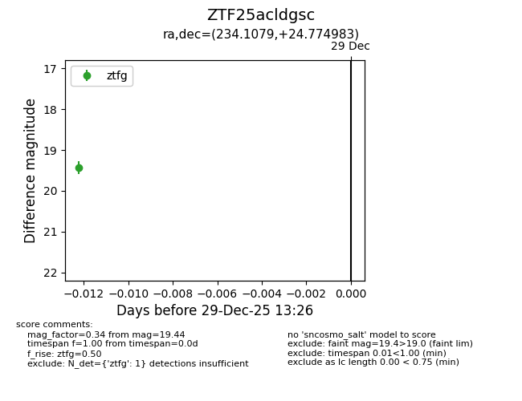
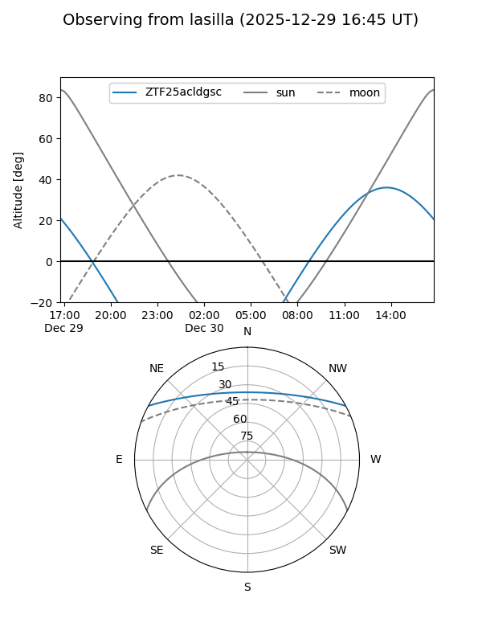
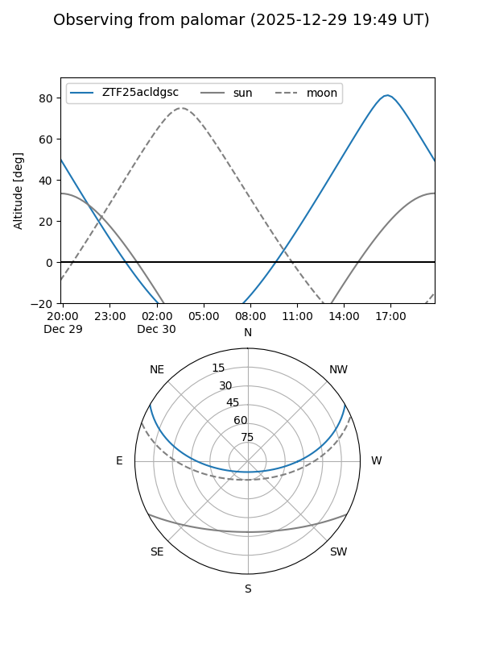

ZTF25acldgsc
Target ZTF25acldgsc at 2025-12-29 13:28
Aliases and brokers:
FINK: fink-portal.org/ZTF25acldgsc
Lasair: lasair-ztf.lsst.ac.uk/objects/ZTF25acldgsc
ALeRCE: alerce.online/object/ZTF25acldgsc
alt names
ZTF25acldgsc (ztf,fink_ztf)
Coordinates:
equatorial (ra, dec) = 234.1079,+24.77498
equatorial (HMS+DMS) = 15:36:25.89,+24:46:29.94
galactic (l, b) = (38.8139,+53.00042)
Flags:
Photometry:
last ztfg=19.44
1 ztfg detections
Lightcurve

Visibility


Additional plots